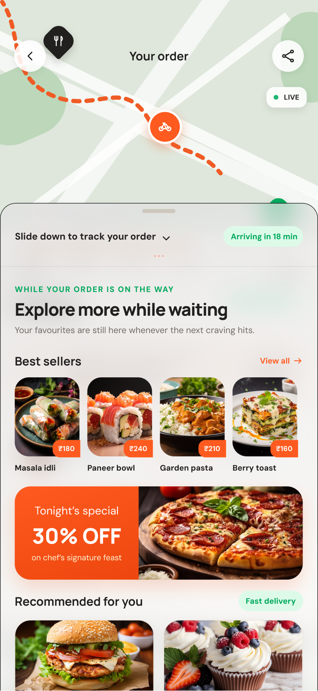
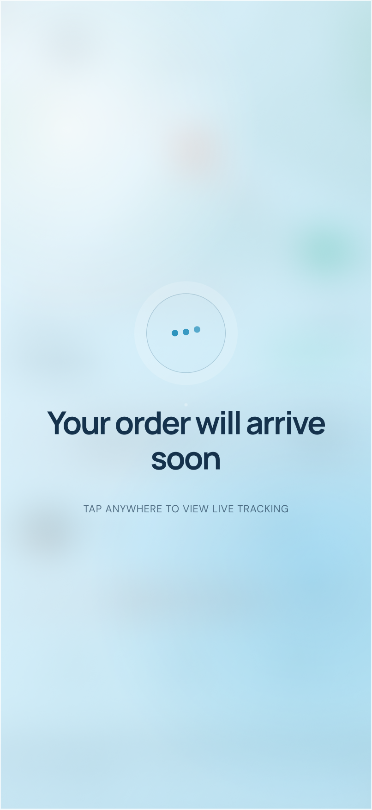

Every pixel engineered to calm hungry minds.
Instead of keeping the user in the dark, Saffron breaks the tracking process into clear, predictable stages with honest information at every single step.
Predictive Transparency (Dynamic ETAs)
To combat ETA anxiety, Saffron utilizes machine learning regression models for dynamic delivery estimates. Instead of a fragile single-point countdown, the screen displays a "Traffic-aware route" indicator alongside a "High confidence" badge. When a delay happens, the system contextualizes it (e.g. "we think delivery person is stuck in traffic"), explaining the why behind the wait so users never feel kept in the dark.
"Explore More While Waiting" Engine
The tracking screen features a swipeable bottom sheet surfacing "Best sellers" and curated recommendations while the customer waits. Leveraging robust UI component design for content carousels, this feature capitalizes on the captive 20–45 minute window — actively shortening perceived wait time while driving secondary engagement and future conversions.
"Let's Wait Here" CTA & Sensory Games
The "Let's wait here" call-to-action is intentionally distinct in color to capture the eye post-payment. Tapping it unlocks a calming sensory module with haptics-sensitive, slow-breathing games and soothing elements, allowing users to relax and forget their hunger worry while the real-time delivery telemetry continues quietly in the background.
Granular Logs & Verified Delivery Partner
Timestamped, minute-by-minute logs (e.g. "+4 min: Aarav is navigating through traffic") mathematically validate the fluctuating ETA with exact delta minutes (+ for delay, − for early). Paired with a verified partner profile card, direct masked calling, and a 4-digit doorstep PIN for zero-mistake handovers.



FEATURE MATRIX
Know more — Competitive Differentiation & Feature Comparison
▾
How Saffron's tracking system stacks up against legacy delivery platforms across essential UX heuristics.
| Feature / Dimension | Legacy Food Apps | Saffron Solution | Design Benefit |
|---|---|---|---|
| Preparation Telemetry | Single static label: "Preparing your food" | 5 granular micro-steps with live timestamps | Creates visible progress during longest wait phase |
| ETA Presentation | Single point estimate (e.g., "32 mins") | Confidence-weighted range ("28–34 mins") | Accommodates real-world variance without feeling late |
| Delay Communication | Silently updates ETA; user discovers surprise | Contextual notification explaining the delta & reason | Proactive honesty preserves trust even during delays |
| Idle-State Design | Static tracker; no ambient or notification guidance | Ambient mode with soft reassurance banners | Reduces screen fatigue and compulsive app reopening |
| Delivery Verification | Rider marks delivered; no customer verification | 4-digit secure PIN verified at handover | Eliminates misplaced orders and misdelivered food |